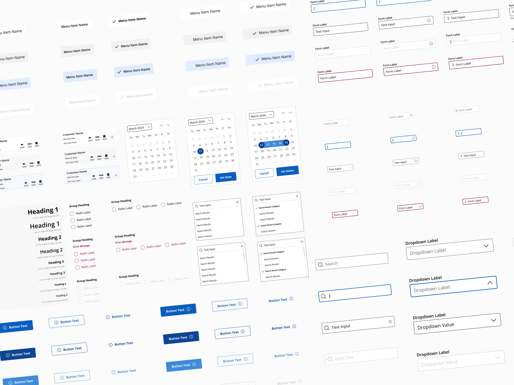
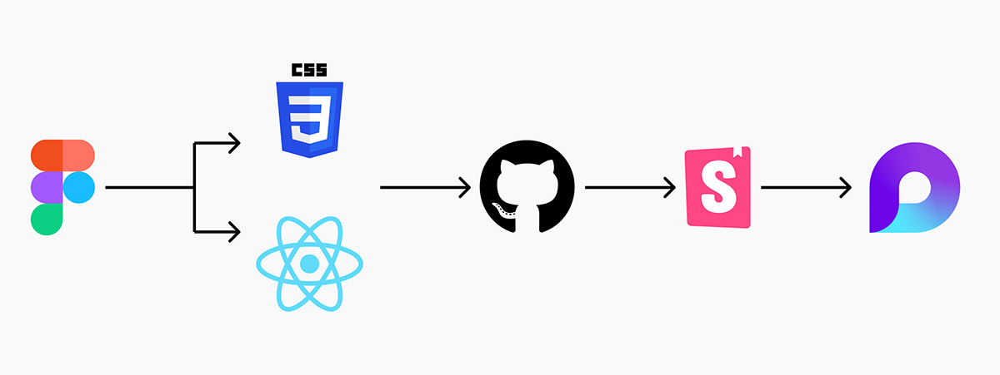
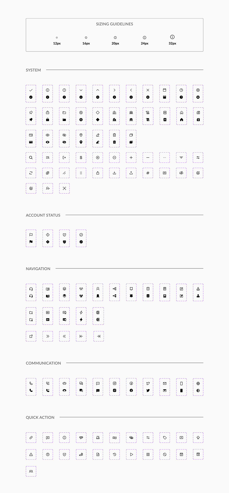
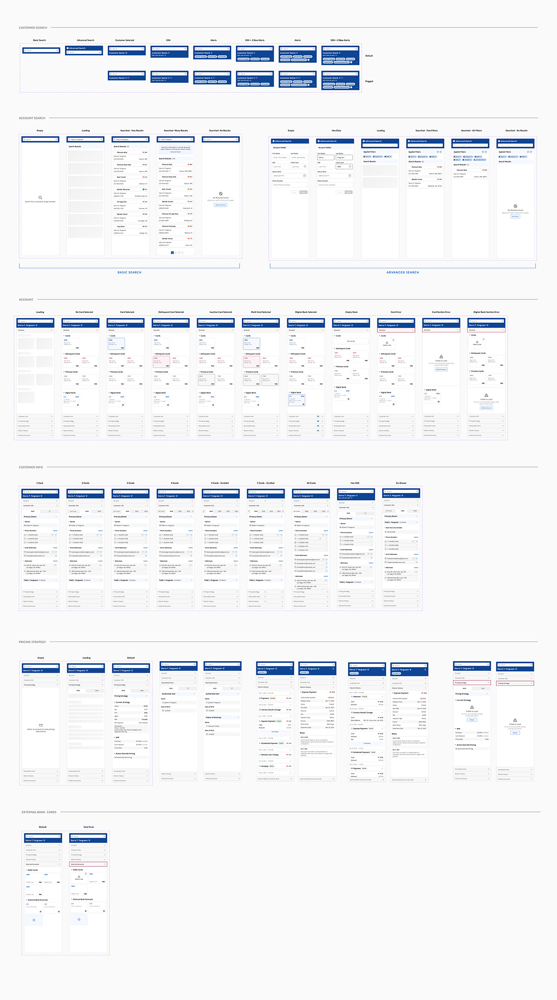
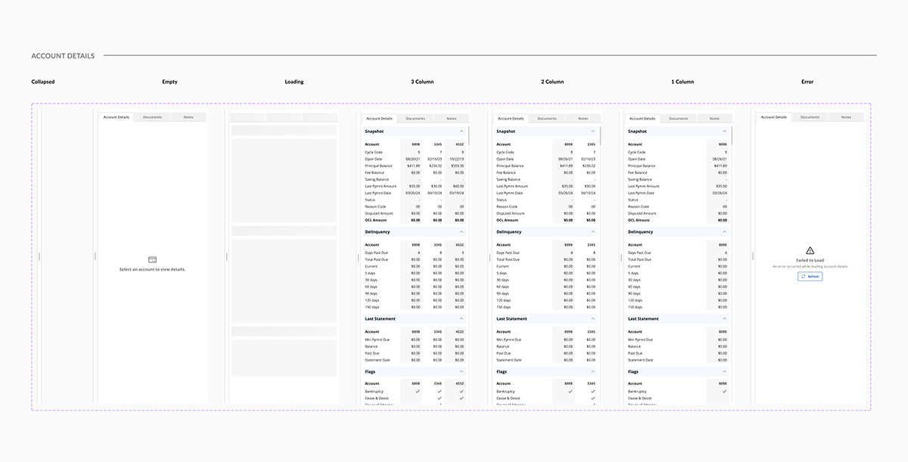
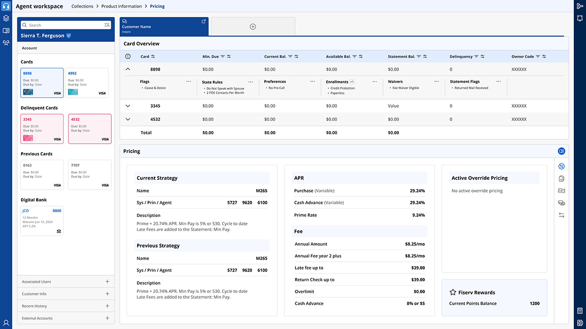

Credit One Bank
I was the Product Design Lead for Credit One Bank's IT department Design System, which handles the internal tooling for our customer service agents to collect payments for customers using the bank's credit cards.
I designed the components using the canonical model, a design pattern for communicating between different data formats.
We took Brad Frost's Atomic Design Systems Approach.
I meet with our front-end developers, developer architects, and backend devs daily as I release new components for them to build and chat about new ones that need to be added to understand what's possible and what's not.
My Responsibilities:
- Audit new product work in flight
- Propose and scope new components and features
- Work with engineers to define component API
- Write, review, and publish technical documentation
- Work with accessibility (WCAG guidelines) and write guidelines and documentation
- Refine processes of our Agile centralized team
- Educate our design vendors on how to use the Design System
- Build and maintain a complex Figma library
- Stay updated with everything new with Figma, such as new features and plugins to make my job easier and build better.
- Design visual language and produce guidelines
- Meet with stakeholders for weekly reviews of components.
- Receive business requirements for new components for the design system.
I worked along side my co-worker - Sara Martin to build this design system from 0-1.

Translating the Design System into code and then documentation
I worked closely with our lead developer and their team to ensure our design system's color, typography, and elevation tokens were aligned with the code base and our reusable components.
They pushed from Github to Storybook for the developers, and I used Microsoft Loop to document the whole design system—the use cases, how not to use it, behavior, etc.
This documentation is and will be used by all and future Product Designers as well as any developer or project manager who would need to use the design system
Icons
We chose Phospher Icons because they offer a robust variety of icons (over 7,500) and are open source.
Customer Panel
The Customer Panel is an organism inside of the template. It's made up of molecules like Tiles and Lists.
This Panel houses customer information such as account details, personal information, history, cards, internal bank accounts, etc.
We had to conduct a few interviews to determine where we would land for these components. One thing we learned while building this software is that the agents need to see everything at once.
We chose the decisions I made while building these complex components for the design system by empathizing with our user base and building them something they could use to make their job much more manageable.
Side Sheet
The side sheet is a common component, so we had to consider what our users were saying and build something valuable and delightful.
This side sheet will be open when the agent receives a call, or they can drag it out if they'd like to.
This has a few layers, so we disputed the stakeholder's decision and explained why we needed a tabular view.
This allows us to display multiple pieces of data in one location.
